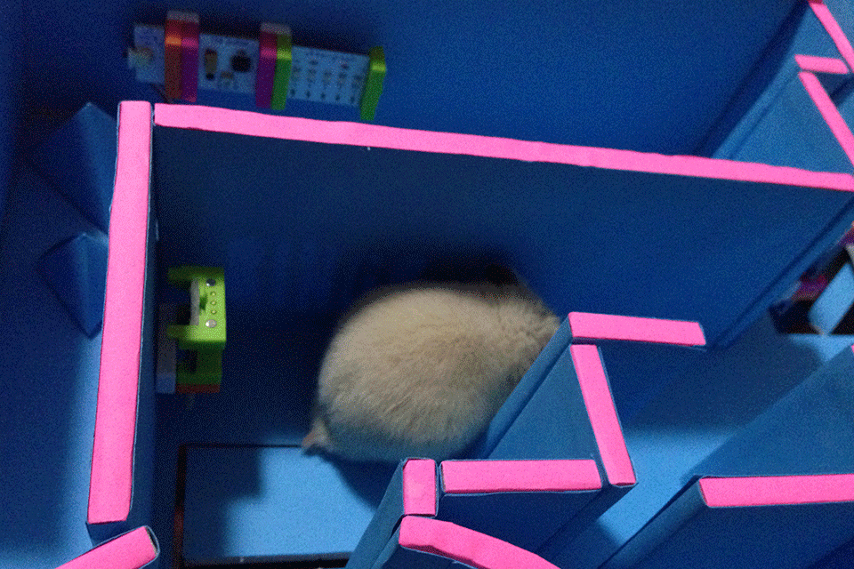

Katyusha is a cute hamster lives in Shanghai. She's very smart,
a bit aggressive, but a quite adorable young lady in general.
She loves sunflower seeds and littleBits.

Moving Picture Show installed at the Jesuits Chapel in Chaumont 23rd International Poster and Graphic Design Festival, 2012
Moving Picture Show installed at the Jesuits Chapel in Chaumont 23rd International Poster and Graphic Design Festival, 2012
The production of David Reinfurt's 3 Minutes of 4D, a revisiting of Michael Noll’s 3D Projection of a Rotating 4-Dimensional Hypercube from 1962.
Moiré by James Goggin (top left) Spirit & Letter by David Reinfurt (top right) Tadpoles by Jonathan Puckey / Studio Moniker (bottom left) Blind Portrait by Karl Nawrot (bottom right)